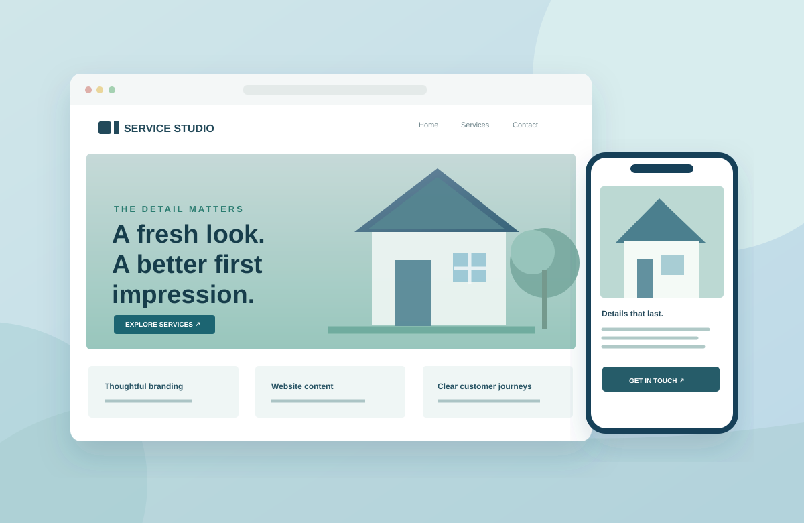

Digital presence
Created website content and helped structure information around the business and its services.
MARKETING / WEBSITE CONTENT / BUSINESS OPERATIONS
Connecting brand communication, website content, and day-to-day marketing and operational systems for a service business.

THE CONTEXT
At Tingkad Softwash Corporation, my responsibilities have spanned marketing and administrative operations. The work has included helping establish a digital marketing foundation through website structure, website content, brand messaging, and social media materials.
Beyond the customer-facing side, I have contributed to recurring marketing processes, inquiry workflows, and operational coordination. It has given me a practical view of how good communication and organized systems work together.
Created website content and helped structure information around the business and its services.
Planned social content, developed creative materials, and contributed to brand and advertising messaging.
Created or supported internal processes for recurring activities, inquiries, documentation, and cross-functional coordination.
UP NEXT: REAL WORK SAMPLES
This is a first-draft case study based on my documented responsibilities. Approved visuals, specific examples, and verified results will be added as available.